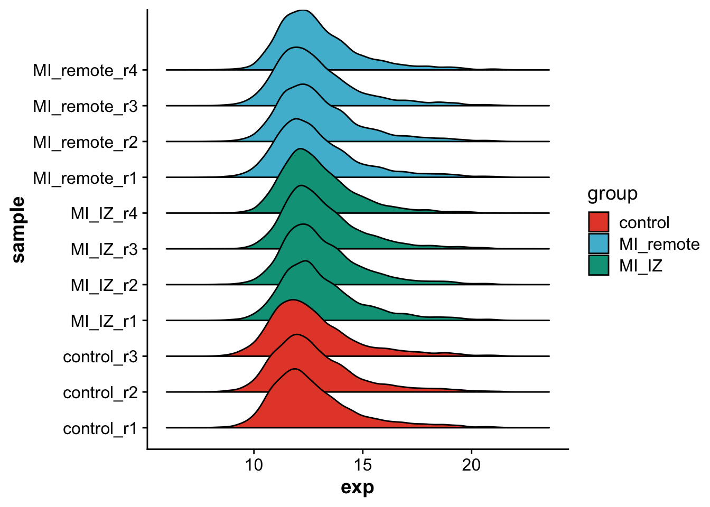
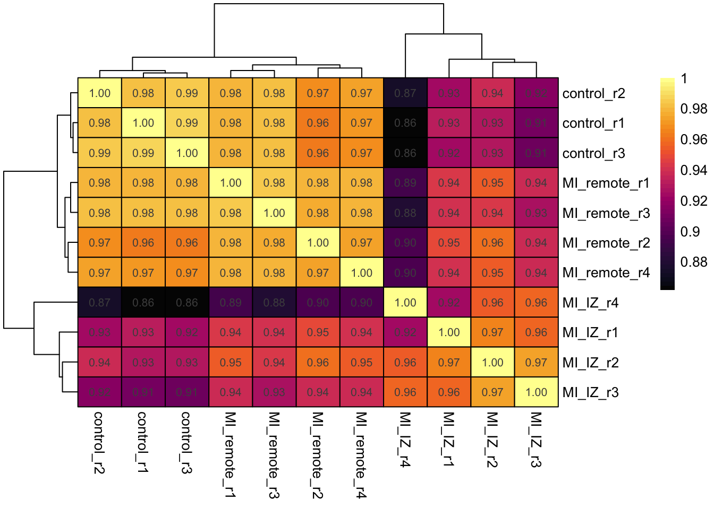
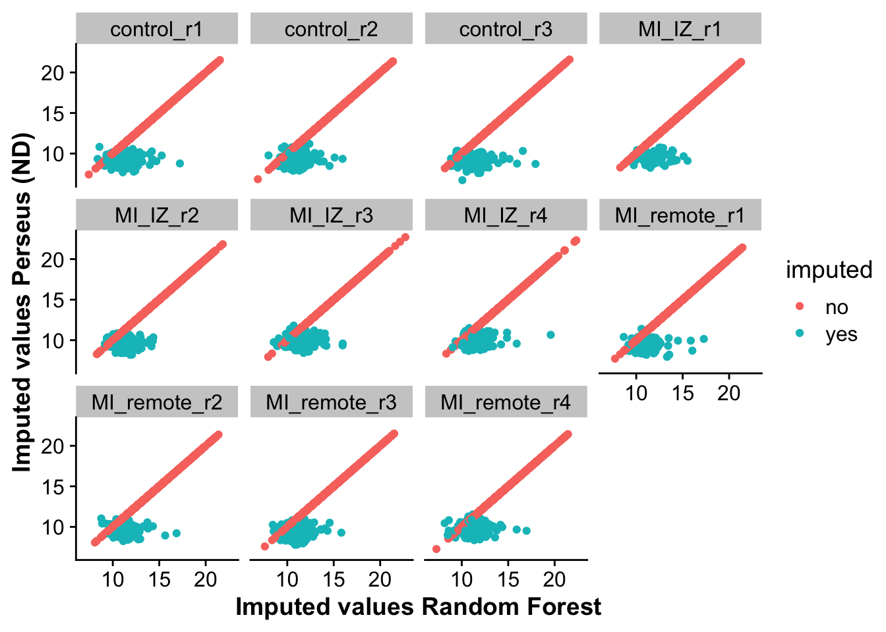
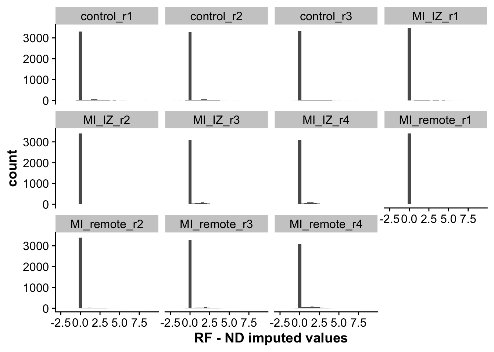
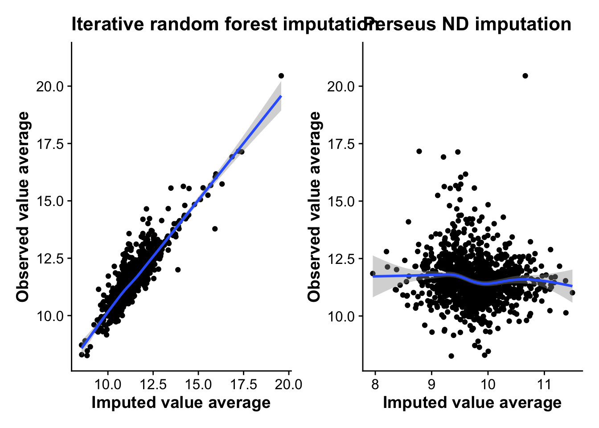

Last updated: 2023-06-14
Checks: 7 0
Knit directory: mi_spatialomics/
This reproducible R Markdown analysis was created with workflowr (version 1.7.0). The Checks tab describes the reproducibility checks that were applied when the results were created. The Past versions tab lists the development history.
Great! Since the R Markdown file has been committed to the Git repository, you know the exact version of the code that produced these results.
Great job! The global environment was empty. Objects defined in the global environment can affect the analysis in your R Markdown file in unknown ways. For reproduciblity it’s best to always run the code in an empty environment.
The command set.seed(20230612) was run prior to running
the code in the R Markdown file. Setting a seed ensures that any results
that rely on randomness, e.g. subsampling or permutations, are
reproducible.
Great job! Recording the operating system, R version, and package versions is critical for reproducibility.
Nice! There were no cached chunks for this analysis, so you can be confident that you successfully produced the results during this run.
Great job! Using relative paths to the files within your workflowr project makes it easier to run your code on other machines.
Great! You are using Git for version control. Tracking code development and connecting the code version to the results is critical for reproducibility.
The results in this page were generated with repository version 2d015dd. See the Past versions tab to see a history of the changes made to the R Markdown and HTML files.
Note that you need to be careful to ensure that all relevant files for
the analysis have been committed to Git prior to generating the results
(you can use wflow_publish or
wflow_git_commit). workflowr only checks the R Markdown
file, but you know if there are other scripts or data files that it
depends on. Below is the status of the Git repository when the results
were generated:
Ignored files:
Ignored: .Rhistory
Ignored: .Rproj.user/
Ignored: data/.DS_Store
Ignored: references/
Ignored: renv/library/
Ignored: renv/staging/
Note that any generated files, e.g. HTML, png, CSS, etc., are not included in this status report because it is ok for generated content to have uncommitted changes.
These are the previous versions of the repository in which changes were
made to the R Markdown
(analysis/proteomics.impute_proteins.Rmd) and HTML
(docs/proteomics.impute_proteins.html) files. If you’ve
configured a remote Git repository (see ?wflow_git_remote),
click on the hyperlinks in the table below to view the files as they
were in that past version.
| File | Version | Author | Date | Message |
|---|---|---|---|---|
| Rmd | 2d015dd | FloWuenne | 2023-06-14 | Finalized imputation with RF. |
| html | 2d015dd | FloWuenne | 2023-06-14 | Finalized imputation with RF. |
Here we will use the filtered protein list to impute missing proteins using iterated random forests via the missForest package as described by Jin et al 2021 .
First, we load the filtered data table produced in Filter proteomics data.
prot <- fread("./output/proteomics.filtered_proteins.tsv")
genes_prot <- prot %>%
select(Protein_Ids,Genes)
prot_form <- prot %>%
select(-c(Protein_Group,Protein_Ids,Protein_Names,Genes))
rownames(prot_form) <- prot$Protein_IdsNo we will use the MissForest package to impute missing value in our protein matrix. We use the doParallel package to parallelize the imputation to speed up the process.
## Logged before imputation
prot_form_log <- log2(prot_form)
doParallel::registerDoParallel(cores = 6) # set based on number of CPU cores
doRNG::registerDoRNG(seed = 123)
prot_form_RF_log <- missForest(prot_form_log, verbose = TRUE,
parallelize = 'forests') parallelizing computation of the random forest model objects
missForest iteration 1 in progress...randomForest 4.7-1.1Type rfNews() to see new features/changes/bug fixes.
Attaching package: 'randomForest'The following object is masked from 'package:dplyr':
combineThe following object is masked from 'package:ggplot2':
marginLoading required package: foreach
Attaching package: 'foreach'The following objects are masked from 'package:purrr':
accumulate, whenLoading required package: rngtoolsdone!
estimated error(s): 0.1855189
difference(s): 0.001685077
time: 4.388 seconds
missForest iteration 2 in progress...done!
estimated error(s): 0.178667
difference(s): 1.011403e-05
time: 4.594 seconds
missForest iteration 3 in progress...done!
estimated error(s): 0.1784553
difference(s): 3.487779e-06
time: 4.616 seconds
missForest iteration 4 in progress...done!
estimated error(s): 0.1789522
difference(s): 2.479728e-06
time: 4.643 seconds
missForest iteration 5 in progress...done!
estimated error(s): 0.1781391
difference(s): 2.320837e-06
time: 4.712 seconds
missForest iteration 6 in progress...done!
estimated error(s): 0.17881
difference(s): 2.068678e-06
time: 4.354 seconds
missForest iteration 7 in progress...done!
estimated error(s): 0.1786566
difference(s): 2.141137e-06
time: 4.19 seconds## Perform imputation using MissForest
prot_imp_log <- prot_form_RF_log$ximp
prot_imp_log$Protein_Ids <- rownames(prot_imp_log)
prot_imp_log <- left_join(prot_imp_log,genes_prot, by = "Protein_Ids")
## Add number of imputed values to table
imputed_val_rows <- rowSums(is.na(prot))
imputed_val_df <- data.frame("Genes" = prot$Genes,
"Protein_Ids" = prot$Protein_Ids,
"imputed_values" = imputed_val_rows)
prot_imp_log <- left_join(prot_imp_log,imputed_val_df, by =c("Genes","Protein_Ids"))## Transform data to long format
prot_imp_log_long <- prot_imp_log %>%
pivot_longer(control_r1:MI_remote_r4,
names_to = "sample",
values_to = "exp") %>%
mutate("group" = if_else(grepl("control",sample),"control",
if_else(grepl("MI_IZ",sample),"MI_IZ","MI_remote")))
## For each protein, add whether the value is imputed or observed
prot_long <- prot %>%
pivot_longer(control_r1:MI_remote_r4,
names_to = "sample",
values_to = "exp") %>%
mutate("imputed" = if_else(is.na(exp),"yes","no")) %>%
select(Protein_Ids,Genes,sample,imputed)
prot_imp_log_long <- left_join(prot_imp_log_long,prot_long,by=c("Protein_Ids","Genes","sample"))
## Set order of groups
prot_imp_log_long$group <- factor(prot_imp_log_long$group,
levels = c("control","MI_remote","MI_IZ"))Let’s visualize the overall distribution of protein expression values after imputation per sample.
## Plot distribution of all values
ggplot(prot_imp_log_long,aes(exp,sample,fill = group)) +
geom_density_ridges2() +
scale_fill_npg()Picking joint bandwidth of 0.284
| Version | Author | Date |
|---|---|---|
| 2d015dd | FloWuenne | 2023-06-14 |
As we can see, protein expression distributions are very similar across samples and conditions.
Let’s plot a sample correlation heatma, to see how samples correlate. We expect controls to correlate strongly with each other and more with remote endocardium then with MI endocardium.
## Plot a correlation matrix of samples
prot_imp_log_matrix <- prot_imp_log %>%
select(-c(Protein_Ids,Genes,imputed_values))
pheatmap(cor(prot_imp_log_matrix),
border_color = "black",
color = hcl.colors(50, "Inferno"),
display_numbers = TRUE,
cluster_cols = TRUE,
cluster_rows = TRUE)
| Version | Author | Date |
|---|---|---|
| 2d015dd | FloWuenne | 2023-06-14 |
Let’s save the imputed protein table for downstream analysis.
write.table(prot_imp_log,
file = "./output/proteomics.filt_imputed_proteins.tsv",
sep = "\t",
col.names = TRUE,
row.names = FALSE,
quote = FALSE)We want to also compare our iterative random forest imputation (RF) with an imputation from the Perseus package that uses random draws from a normal distribution (ND imputation).
First, let’s load the Perseus imputed values:
## Compare to Perseus ND imputation
perseus <- fread("./data/20230614_perseus_imputed.txt")
perseus_merge <- left_join(prot_imp_log,perseus,by=c("Protein_Ids","Genes"), suffix = c("_RF","_perseus"))We will then reformat the data to be merged with our iterative random forest imputation to be able to compare them.
perseus_merge_data <- perseus_merge %>%
select(-c(Protein_Ids,Protein_Group,Protein_Names,Genes))
perseus_merge_data$Genes <- perseus_merge$Genes
perseus_merge_data$Protein_Ids <- perseus_merge$Protein_Ids
perseus_merge_data <- perseus_merge_data %>%
pivot_longer(control_r1_RF:MI_remote_r4_perseus,
names_to = "sample",
values_to = "exp")
perseus_merge_data_mi <- perseus_merge_data %>%
subset(grepl("MI_",sample)) %>%
separate(sample,into = c("group","region","replicate","method"), sep = "_") %>%
mutate("sample" = paste(group,region,replicate,sep="_")) %>%
select(sample,method,exp,Genes,Protein_Ids)
perseus_merge_data_control <-perseus_merge_data %>%
subset(grepl("control",sample)) %>%
separate(sample,into = c("group","replicate","method"), sep = "_") %>%
mutate("sample" = paste(group,replicate,sep="_")) %>%
select(sample,method,exp,Genes,Protein_Ids)
perseus_merge_data_long <- rbind(perseus_merge_data_control,perseus_merge_data_mi)
perseus_merge_data_long <- left_join(perseus_merge_data_long,prot_long,by=c("Protein_Ids","Genes","sample"))
perseus_merge_data_wide <- perseus_merge_data_long %>%
pivot_wider(names_from = "method", values_from = "exp") %>%
mutate("diff" = RF - perseus)We can then calculate the differences in imputed values between RF and ND imputation.
avg_imp_diff <- perseus_merge_data_wide %>%
group_by(Genes,Protein_Ids) %>%
subset(imputed == "yes") %>%
summarise("count" = n(),
"mean" = mean(diff),
"sd" = sd(diff)) %>%
arrange(desc(mean))`summarise()` has grouped output by 'Genes'. You can override using the
`.groups` argument.missing_rate_rows <- rowSums(is.na(prot))
missing_rate_df <- data.frame("Genes" = prot$Genes,
"Protein_Ids" = prot$Protein_Ids,
"missing_rate" = missing_rate_rows)
avg_imp_diff <- left_join(avg_imp_diff,missing_rate_df, by =c("Genes","Protein_Ids"))
avg_imp_diff$missing_rate <- avg_imp_diff$missing_rate Let’s first visualize the correlation between non-imputed and imputed values from RF and ND.
## Plot correlation between imputed values for all samples
ggplot(perseus_merge_data_wide,aes(RF,perseus,color = imputed)) +
geom_point() +
facet_wrap(~sample) +
labs(x = "Imputed values Random Forest",
y = "Imputed values Perseus (ND)")
| Version | Author | Date |
|---|---|---|
| 2d015dd | FloWuenne | 2023-06-14 |
As we can see, non-imputed values perfectly correlate, as these are not changed by imputation. For imputed values, ND seems to impute lower values on average then RF. This is also represented by the next plot, looking at the distribution of differences across both methods.
## Plot distribution of differences between imputation methods
ggplot(perseus_merge_data_wide,aes(diff)) +
geom_histogram() +
facet_wrap(~sample) +
labs(x = "RF - ND imputed values")`stat_bin()` using `bins = 30`. Pick better value with `binwidth`.
| Version | Author | Date |
|---|---|---|
| 2d015dd | FloWuenne | 2023-06-14 |
Finally, let’s plot the correlation between the average imputed values and the average observed values per protein for both methods. A method that imputes values close to the actual observed values should show some linear correlation, while a random method should show no correlation.
## Plot avg imputed expression values against the avg of the non-imputed per gene
perseus_merge_data_wide_imp_sum <- perseus_merge_data_wide %>%
group_by(Genes,Protein_Ids,imputed) %>%
summarise("avg_RF" = mean(RF),
"avg_perseus" = mean(perseus))`summarise()` has grouped output by 'Genes', 'Protein_Ids'. You can override
using the `.groups` argument.## RF
comp_imp_wide_RF <- perseus_merge_data_wide_imp_sum %>%
select(-avg_perseus) %>%
pivot_wider(names_from = "imputed",
values_from = "avg_RF",
names_prefix = "RF_imp_")
rf_corr <- ggplot(comp_imp_wide_RF,aes(RF_imp_yes,RF_imp_no)) +
geom_point() +
geom_smooth() +
labs(x = "Imputed value average",
y = "Observed value average",
title = "Iterative random forest imputation")
## ND
comp_imp_wide_RF <- perseus_merge_data_wide_imp_sum %>%
select(-avg_RF) %>%
pivot_wider(names_from = "imputed",
values_from = "avg_perseus",
names_prefix = "perseus_imp_")
nd_corr <- ggplot(comp_imp_wide_RF,aes(perseus_imp_yes,perseus_imp_no)) +
geom_point() +
geom_smooth() +
labs(x = "Imputed value average",
y = "Observed value average",
title = "Perseus ND imputation")
## Plot correlation between average imputed values and observed values for both imputation methods
rf_corr + nd_corr`geom_smooth()` using method = 'gam' and formula = 'y ~ s(x, bs = "cs")'Warning: Removed 2443 rows containing non-finite values (`stat_smooth()`).Warning: Removed 2443 rows containing missing values (`geom_point()`).`geom_smooth()` using method = 'gam' and formula = 'y ~ s(x, bs = "cs")'Warning: Removed 2443 rows containing non-finite values (`stat_smooth()`).
Removed 2443 rows containing missing values (`geom_point()`).
| Version | Author | Date |
|---|---|---|
| 2d015dd | FloWuenne | 2023-06-14 |
As the plots show, there is a clear linear correlation between the average imputed value from RF and the average observed values per protein, with RF on average imputing lower average values then the observed values, making it likely more conservative. ND imputation on the other hand shows no correlation with observed values at all, highlighting the random nature of the approach and suggesting that imputation using this method might induce more noise into the data.
sessionInfo()R version 4.2.3 (2023-03-15)
Platform: aarch64-apple-darwin20 (64-bit)
Running under: macOS Ventura 13.4
Matrix products: default
BLAS: /Library/Frameworks/R.framework/Versions/4.2-arm64/Resources/lib/libRblas.0.dylib
LAPACK: /Library/Frameworks/R.framework/Versions/4.2-arm64/Resources/lib/libRlapack.dylib
locale:
[1] en_US.UTF-8/en_US.UTF-8/en_US.UTF-8/C/en_US.UTF-8/en_US.UTF-8
attached base packages:
[1] stats graphics grDevices datasets utils methods base
other attached packages:
[1] doRNG_1.8.6 rngtools_1.5.2 foreach_1.5.2
[4] randomForest_4.7-1.1 ggsci_3.0.0 cowplot_1.1.1
[7] pheatmap_1.0.12 patchwork_1.1.2 ggridges_0.5.4
[10] here_1.0.1 missForest_1.5 data.table_1.14.8
[13] lubridate_1.9.2 forcats_1.0.0 stringr_1.5.0
[16] dplyr_1.1.2 purrr_1.0.1 readr_2.1.4
[19] tidyr_1.3.0 tibble_3.2.1 ggplot2_3.4.2
[22] tidyverse_2.0.0 workflowr_1.7.0
loaded via a namespace (and not attached):
[1] httr_1.4.6 sass_0.4.6 jsonlite_1.8.4 splines_4.2.3
[5] bslib_0.4.2 getPass_0.2-2 highr_0.10 renv_0.17.3
[9] yaml_2.3.7 lattice_0.20-45 pillar_1.9.0 glue_1.6.2
[13] digest_0.6.31 RColorBrewer_1.1-3 promises_1.2.0.1 colorspace_2.1-0
[17] Matrix_1.5-3 htmltools_0.5.5 httpuv_1.6.11 pkgconfig_2.0.3
[21] scales_1.2.1 itertools_0.1-3 processx_3.8.0 whisker_0.4.1
[25] later_1.3.1 tzdb_0.4.0 timechange_0.2.0 git2r_0.32.0
[29] mgcv_1.8-42 generics_0.1.3 farver_2.1.1 cachem_1.0.8
[33] withr_2.5.0 cli_3.6.1 magrittr_2.0.3 evaluate_0.21
[37] ps_1.7.4 fs_1.6.2 fansi_1.0.4 nlme_3.1-162
[41] doParallel_1.0.17 tools_4.2.3 hms_1.1.3 lifecycle_1.0.3
[45] munsell_0.5.0 callr_3.7.3 compiler_4.2.3 jquerylib_0.1.4
[49] rlang_1.1.1 grid_4.2.3 iterators_1.0.14 rstudioapi_0.14
[53] labeling_0.4.2 rmarkdown_2.21 gtable_0.3.3 codetools_0.2-19
[57] R6_2.5.1 knitr_1.42 fastmap_1.1.1 utf8_1.2.3
[61] rprojroot_2.0.3 stringi_1.7.12 parallel_4.2.3 Rcpp_1.0.10
[65] vctrs_0.6.2 tidyselect_1.2.0 xfun_0.39